일반틀니
탈착식으로 뺐다꼇다 하는 보철물
잇몸뼈가 점차 흡수되어
영구적으로 사용이 불가능
<%=m_client_en%>
치아가 하나도 없는 무치악의 경우 전체 틀니를 하거나 전체임플란트(픽스쳐 8~10)개를 식립하지만
풀아치 임플란트는 소수(6개)의 임플란트 식립, 연결하여 전체 치아를 수복하는 방법입니다.
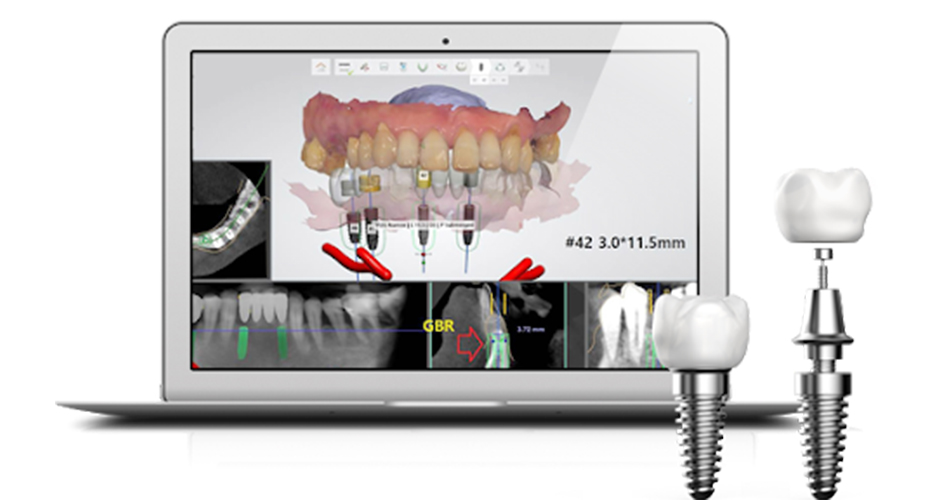
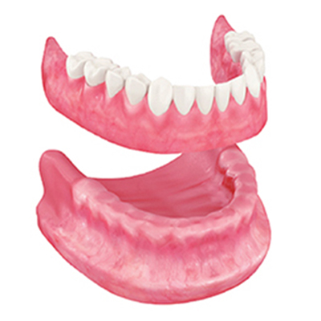
잇몸뼈가 점차 흡수되어
영구적으로 사용이 불가능
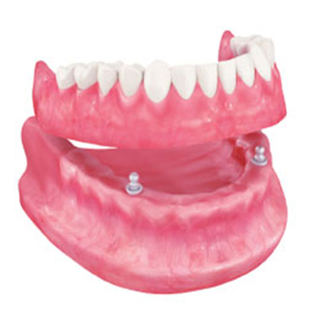
점진적인 뼈 흡수가 진행되어
임플란트 식립이 불가능한 경우에만 권장
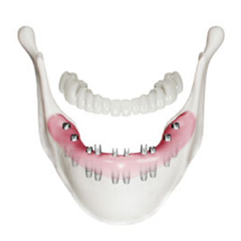
잇몸뼈가 충분한 경우에만
식립이 가능하고 시술이 고가
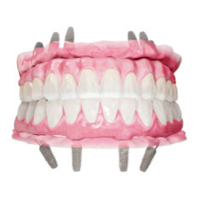
안정성이 높으며
시술비용이 합리적
디지털 풀아치 임플란트는 구강스캔 과정부터 디지털로 진행하여 환자분의 상태를 정밀하게 체크하고
네비게이션 임플란트 프로그램으로 디지털하게 작업하여 오차 없이 정확한 위치에 식립할 수 있습니다.
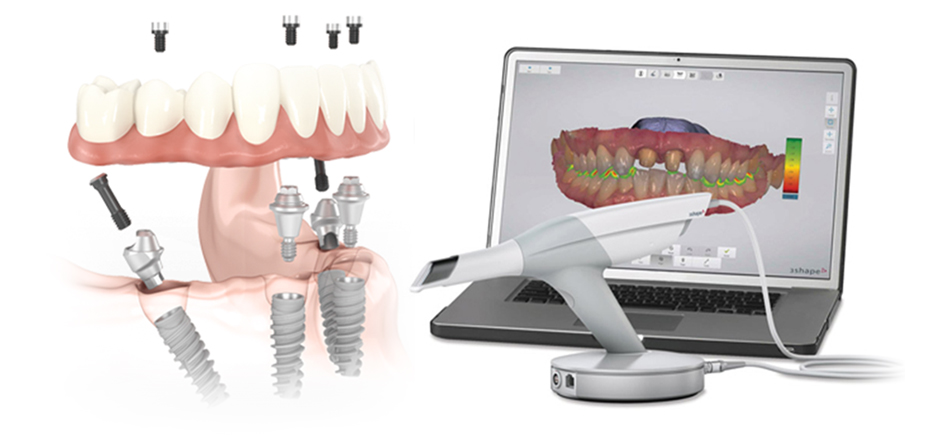
디지털
스캔으로
정확한 교합
네비게이션
임플란트로
정확한 시술
6개의
임플란트
식립
최소
내원만으로
완료
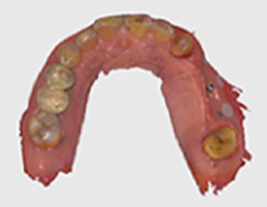
디지털 장비를 이용하여
치아의 현재 상태를 정확하게 파악
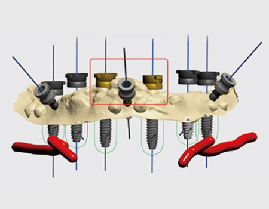
모의 수술을 통해 식립 위치, 깊이 등을
세밀하게 체크
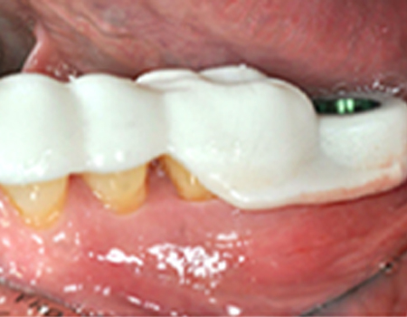
3D 가이드를 이용하여 디지털 네비게이션으로
정확하게 수술 진행
일반 전체 임플란트에 비해 적은 임플란트
시술로
비용에 대한 부담감이 줄어듭니다.
고정형 인공치아로 일상생활에서
내 치아같은 자연스러움을 느끼실 수 있습니다.
잇몸뼈와 인공치아를 연결하므로,
내 입에 잘 고정되어 불안함이 없습니다.
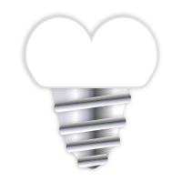
시술 후 임시치아를 바로 체결하여
시술 당일, 즉시 일상생활리 가능합니다.
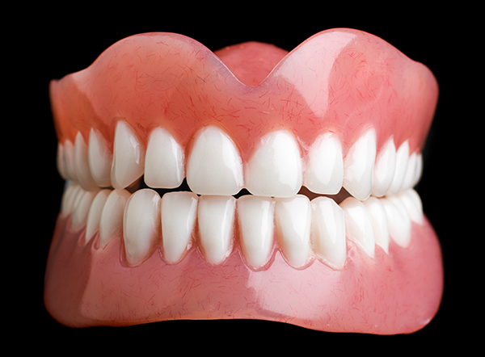
잇몸에 고정되지 않아
음식을 먹거나 말할때
흔들림이 있어 불안정
뻇다 껴아 하는
내 치아 같지
않은 불편함
치아 뼈의 손실로
시간이 갈수록
틀니가 헐거워짐
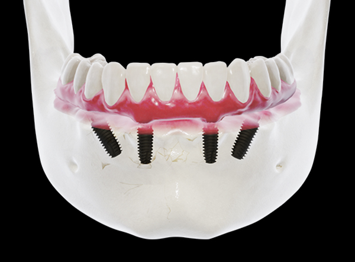
잇몸뼈와 인공치아를
연결하므로 내 입에
잘 고정되어 안정적
고정적 인공치아로
일상생활에서 내 치아같은
자연스러움
치아뼈의 손실을 막아
줌으로써 시간이 지나도
흔들림 없이 유지
틀니 사용에
불편함을
느끼시는
분들
임플란트 치료 중
잦은 내원이
어려운 분들
당뇨, 혈압 등
전신질환 환자 분
경제적인 부담을
덜고자하는 분들